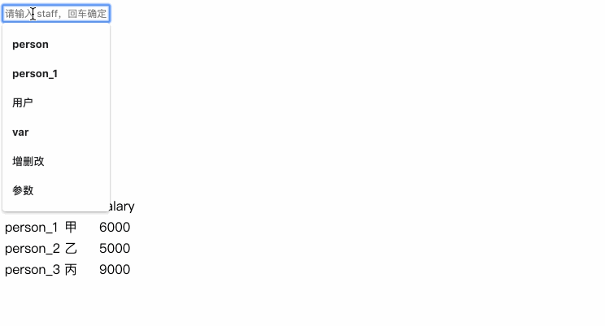
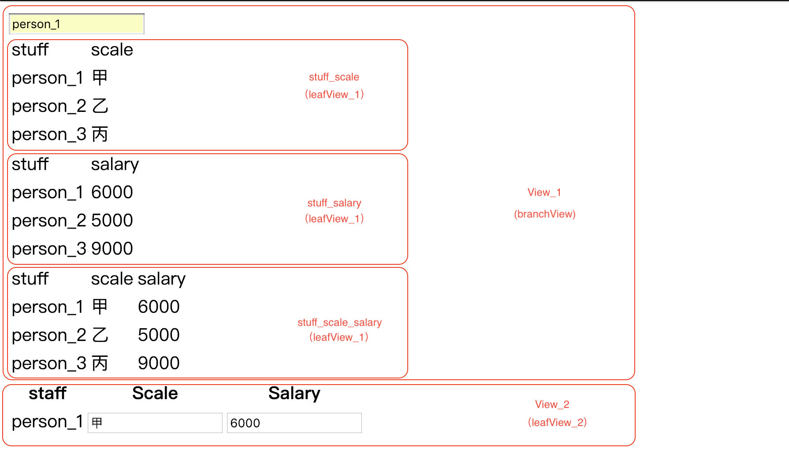

<!DOCTYPE html><html class="theme-next mist" lang="zh-Hans"><head><meta name="generator" content="Hexo 3.9.0"><meta charset="UTF-8"><meta name="baidu-site-verification" content="dil57BBbBc"><meta http-equiv="X-UA-Compatible" content="IE=edge"><meta name="viewport" content="width=device-width,initial-scale=1,maximum-scale=1"><meta name="theme-color" content="#222"><link rel="manifest" href="/manifest.json"><link rel="stylesheet" media="all" href="/lib/Han/dist/han.min.css?v=3.3"><meta http-equiv="Cache-Control" content="no-transform"><meta http-equiv="Cache-Control" content="no-siteapp"><meta name="google-site-verification" content="YH32omENY7b_BdEuIWv46jSBK-0Vyw_dWbJTGNBblT0"><link href="https://cdn.jsdelivr.net/gh/tonsky/FiraCode@1.206/distr/fira_code.css" rel="stylesheet" type="text/css"><link href="/lib/font-awesome/css/font-awesome.min.css?v=4.6.2" rel="stylesheet" type="text/css"><link href="/css/main.css?v=5.1.4" rel="stylesheet" type="text/css"><link rel="apple-touch-icon" sizes="180x180" href="/images/favicon.ico?v=5.1.4"><link rel="icon" type="image/png" sizes="32x32" href="/images/favicon.ico?v=5.1.4"><link rel="icon" type="image/png" sizes="16x16" href="/images/favicon.ico?v=5.1.4"><link rel="icon" type="image/png" sizes="16x16" href="/images/favicon.ico?v=5.1.4"><link rel="icon" type="image/png" sizes="16x16" href="/images/favicon.ico?v=5.1.4"><link rel="icon" type="image/png" sizes="16x16" href="/images/favicon.ico?v=5.1.4"><meta name="keywords" content="观察者模式,MVC,策略模式,组合模式,"><meta name="description" content="经过之前的咬文嚼字说策略、在JavaScript中尝试组合模式、白话MVC/MVP/MVVM 和 较早之前的进击的观察者模式等文章的铺垫，终于可以把这些理论的东西用于实践了。废话不多说，直奔主题。GoF 并不将 MVC 引述为一种设计模式，而是把它看做是构建一个用户界面的类的集合。按照他们的观点，它实际上是三种经典设计模式的变异组合：观察者模式，策略模式和组合模式。依赖于框架中的 MVC 如何实现"><meta name="keywords" content="观察者模式,MVC,策略模式,组合模式"><meta property="og:type" content="article"><meta property="og:title" content="关于MVC模式简单代码实现"><meta property="og:url" content="http://www.yexiaochen.com/关于MVC模式简单代码实现/index.html"><meta property="og:site_name" content="贪空"><meta property="og:description" content="经过之前的咬文嚼字说策略、在JavaScript中尝试组合模式、白话MVC/MVP/MVVM 和 较早之前的进击的观察者模式等文章的铺垫，终于可以把这些理论的东西用于实践了。废话不多说，直奔主题。GoF 并不将 MVC 引述为一种设计模式，而是把它看做是构建一个用户界面的类的集合。按照他们的观点，它实际上是三种经典设计模式的变异组合：观察者模式，策略模式和组合模式。依赖于框架中的 MVC 如何实现"><meta property="og:locale" content="zh-Hans"><meta property="og:image" content="http://www.yexiaochen.com/images/filter.gif"><meta property="og:image" content="http://www.yexiaochen.com/images/View.png"><meta property="og:updated_time" content="2019-02-06T13:27:08.216Z"><meta name="twitter:card" content="summary"><meta name="twitter:title" content="关于MVC模式简单代码实现"><meta name="twitter:description" content="经过之前的咬文嚼字说策略、在JavaScript中尝试组合模式、白话MVC/MVP/MVVM 和 较早之前的进击的观察者模式等文章的铺垫，终于可以把这些理论的东西用于实践了。废话不多说，直奔主题。GoF 并不将 MVC 引述为一种设计模式，而是把它看做是构建一个用户界面的类的集合。按照他们的观点，它实际上是三种经典设计模式的变异组合：观察者模式，策略模式和组合模式。依赖于框架中的 MVC 如何实现"><meta name="twitter:image" content="http://www.yexiaochen.com/images/filter.gif"><script type="text/javascript" id="hexo.configurations">var NexT=window.NexT||{},CONFIG={root:"/",scheme:"Mist",version:"5.1.4",sidebar:{position:"left",display:"hide",offset:12,b2t:!1,scrollpercent:!1,onmobile:!0},fancybox:!1,tabs:!0,motion:{enable:!1,async:!1,transition:{post_block:"fadeIn",post_header:"slideDownIn",post_body:"slideDownIn",coll_header:"slideLeftIn",sidebar:"slideUpIn"}},duoshuo:{userId:"0",author:"博主"},algolia:{applicationID:"",apiKey:"",indexName:"",hits:{per_page:10},labels:{input_placeholder:"Search for Posts",hits_empty:"We didn't find any results for the search: ${query}",hits_stats:"${hits} results found in ${time} ms"}}}</script><link rel="canonical" href="http://www.yexiaochen.com/关于MVC模式简单代码实现/"><title>关于MVC模式简单代码实现 | 贪空</title><script type="text/javascript">var _hmt=_hmt||[];!function(){var e=document.createElement("script");e.src="https://hm.baidu.com/hm.js?ad8db08f31eca01d048b60d4299de095";var t=document.getElementsByTagName("script")[0];t.parentNode.insertBefore(e,t)}()</script></head><body itemscope itemtype="http://schema.org/WebPage" lang="zh-Hans"><div class="container sidebar-position-left page-post-detail"><div class="headband"></div><header id="header" class="header" itemscope itemtype="http://schema.org/WPHeader"><div class="header-inner"><div class="site-brand-wrapper"><div class="site-meta"><div class="custom-logo-site-title"><a href="/" class="brand" rel="start"><span class="logo-line-before"><i></i></span> <span class="site-title">贪空</span> <span class="logo-line-after"><i></i></span></a></div><h1 class="site-subtitle" itemprop="description">贪空 Blog</h1></div><div class="site-nav-toggle"><button><span class="btn-bar"></span> <span class="btn-bar"></span> <span class="btn-bar"></span></button></div></div><nav class="site-nav"><ul id="menu" class="menu"><li class="menu-item menu-item-home"><a href="/" rel="section"><i class="menu-item-icon fa fa-fw fa-home"></i><br>首页</a></li><li class="menu-item menu-item-tags"><a href="/tags/" rel="section"><i class="menu-item-icon fa fa-fw fa-tags"></i><br>标签</a></li><li class="menu-item menu-item-categories"><a href="/categories/" rel="section"><i class="menu-item-icon fa fa-fw fa-th"></i><br>分类</a></li><li class="menu-item menu-item-archives"><a href="/archives/" rel="section"><i class="menu-item-icon fa fa-fw fa-archive"></i><br>归档</a></li></ul></nav></div></header><main id="main" class="main"><div class="main-inner"><div class="content-wrap"><div id="content" class="content"><div id="posts" class="posts-expand"><article class="post post-type-normal" itemscope itemtype="http://schema.org/Article"><div class="post-block"><link itemprop="mainEntityOfPage" href="http://www.yexiaochen.com/关于MVC模式简单代码实现/"><span hidden itemprop="author" itemscope itemtype="http://schema.org/Person"><meta itemprop="name" content="贪空"><meta itemprop="description" content><meta itemprop="image" content="/images/avatar.jpeg"></span><span hidden itemprop="publisher" itemscope itemtype="http://schema.org/Organization"><meta itemprop="name" content="贪空"></span><header class="post-header"><h2 class="post-title" itemprop="name headline">关于MVC模式简单代码实现</h2><div class="post-meta"><span class="post-time"><span class="post-meta-item-icon"><i class="fa fa-calendar-o"></i> </span><span class="post-meta-item-text">发表于</span> <time title="创建于" itemprop="dateCreated datePublished" datetime="2019-02-06T11:40:56+08:00">2019-02-06 </time><span class="post-meta-divider">|</span> <span class="post-meta-item-icon"><i class="fa fa-calendar-check-o"></i> </span><span class="post-meta-item-text">更新于&#58;</span> <time title="更新于" itemprop="dateModified" datetime="2019-02-06T21:27:08+08:00">2019-02-06 </time></span><span class="post-category"><span class="post-meta-divider">|</span> <span class="post-meta-item-icon"><i class="fa fa-folder-o"></i> </span><span class="post-meta-item-text">分类于</span> <span itemprop="about" itemscope itemtype="http://schema.org/Thing"><a href="/categories/设计模式/" itemprop="url" rel="index"><span itemprop="name">设计模式</span></a></span></span><div class="post-wordcount"><span class="post-meta-item-icon"><i class="fa fa-file-word-o"></i> </span><span class="post-meta-item-text">字数统计&#58;</span> <span title="字数统计">939 字 </span><span class="post-meta-divider">|</span> <span class="post-meta-item-icon"><i class="fa fa-clock-o"></i> </span><span class="post-meta-item-text">阅读时长 &asymp;</span> <span title="阅读时长">4 分钟</span></div></div></header><div class="post-body han-init-context" itemprop="articleBody"><p>经过之前的<a href="http://www.yexiaochen.com/%E5%92%AC%E6%96%87%E5%9A%BC%E5%AD%97%E8%AF%B4%E7%AD%96%E7%95%A5/">咬文嚼字说策略</a>、<a href="http://www.yexiaochen.com/%E5%9C%A8JavaScript%E4%B8%AD%E5%B0%9D%E8%AF%95%E7%BB%84%E5%90%88%E6%A8%A1%E5%BC%8F/">在JavaScript中尝试组合模式</a>、<a href="http://www.yexiaochen.com/%E7%99%BD%E8%AF%9DMVC-MVP-MVVM/">白话MVC/MVP/MVVM</a> 和 较早之前的<a href="http://www.yexiaochen.com/%E8%BF%9B%E5%87%BB%E7%9A%84%E8%A7%82%E5%AF%9F%E8%80%85%E6%A8%A1%E5%BC%8F/">进击的观察者模式</a>等文章的铺垫，终于可以把这些理论的东西用于实践了。废话不多说，直奔主题。</p><blockquote><p>GoF 并不将 MVC 引述为一种设计模式，而是把它看做是构建一个用户界面的类的集合。按照他们的观点，它实际上是三种经典设计模式的变异组合：观察者模式，策略模式和组合模式。依赖于框架中的 MVC 如何实现，它也可能会使用工厂和模板模式。GoF Book 提到这些模式在使用 MVC 工作时是非常有用的附加功能。</p></blockquote><p>功能示意:<br></p><p>由一组数据展示三类表格，分别是【stuff，scale】、【stuff，salary】、【stuff，scale，salary】三组视图。另外可以修改指定 stuff 的 scale 或 salary 信息。</p><p>stuffs 信息：</p><figure class="highlight javascript"><table><tr><td class="gutter"><pre><span class="line">1</span><br><span class="line">2</span><br><span class="line">3</span><br><span class="line">4</span><br><span class="line">5</span><br><span class="line">6</span><br><span class="line">7</span><br><span class="line">8</span><br><span class="line">9</span><br><span class="line">10</span><br><span class="line">11</span><br><span class="line">12</span><br><span class="line">13</span><br><span class="line">14</span><br><span class="line">15</span><br><span class="line">16</span><br><span class="line">17</span><br></pre></td><td class="code"><pre><span class="line"><span class="keyword">const</span> stuffs = [</span><br><span class="line">    &#123;</span><br><span class="line">    stuff: <span class="string">'person_1'</span>,</span><br><span class="line">    scale: <span class="string">'甲'</span>,</span><br><span class="line">    salary: <span class="string">'6000'</span></span><br><span class="line">    &#125;,</span><br><span class="line">    &#123;</span><br><span class="line">    stuff: <span class="string">'person_2'</span>,</span><br><span class="line">    scale: <span class="string">'乙'</span>,</span><br><span class="line">    salary: <span class="string">'5000'</span></span><br><span class="line">    &#125;,</span><br><span class="line">    &#123;</span><br><span class="line">    stuff: <span class="string">'person_3'</span>,</span><br><span class="line">    scale: <span class="string">'丙'</span>,</span><br><span class="line">    salary: <span class="string">'9000'</span></span><br><span class="line">    &#125;</span><br><span class="line">];</span><br></pre></td></tr></table></figure><p>常规的写法可以这么来：</p><p></p><p class="codepen" data-height="265" data-theme-id="dark" data-default-tab="js,result" data-user="yexiaochen" data-slug-hash="aXWLRz" style="height:265px;box-sizing:border-box;display:flex;align-items:center;justify-content:center;border:2px solid #000;margin:1em 0;padding:1em" data-pen-title="tableOrdinary"><br><span>See the Pen <a href="https://codepen.io/yexiaochen/pen/aXWLRz/" rel="external nofollow noopener noreferrer" target="_blank"><br>tableOrdinary</a> by 夜曉宸 (<a href="https://codepen.io/yexiaochen" rel="external nofollow noopener noreferrer" target="_blank">@yexiaochen</a>)<br>on <a href="https://codepen.io" rel="external nofollow noopener noreferrer" target="_blank">CodePen</a>.</span><br></p><p></p><script async src="https://static.codepen.io/assets/embed/ei.js"></script><h2 id="职责分配"><a href="#职责分配" class="headerlink" title="职责分配"></a>职责分配</h2><p>既然说了 MVC 有那么多好处，我们就用 MVC 的模式来改造下我们的代码。首先我们先划分下职责。<br>Model 负责对数据的处理并返回目标数据，在这个场景下是筛选 stuff、修改stuff 等职责。<br>View 负责对目标数据的渲染和处理用户的响应，在这个场景下是各个表格的渲染、change 事件的委托等职责。<br>Control 负责协调 Model 和 View，在这个场景下是处理委托、处理数据等职责。</p><p><strong>此处的 MVC 实现是针对一个 Model 对应多个 View 的代码实现</strong> ，也是为了把观察者模式，策略模式和组合模式模式都用起来。</p><h2 id="View"><a href="#View" class="headerlink" title="View"></a>View</h2><p>【stuff，scale】、【stuff，salary】、【stuff，scale，salary】三组视图就是三个 View，每个 View 都可以独立渲染自己的一组视图。结合组合模式，我们我们造些视图的叶对象和分支对象。</p><p></p><figure class="highlight html"><table><tr><td class="gutter"><pre><span class="line">1</span><br><span class="line">2</span><br><span class="line">3</span><br><span class="line">4</span><br><span class="line">5</span><br><span class="line">6</span><br><span class="line">7</span><br><span class="line">8</span><br><span class="line">9</span><br></pre></td><td class="code"><pre><span class="line"><span class="tag">&lt;<span class="name">html</span>&gt;</span></span><br><span class="line">  <span class="tag">&lt;<span class="name">head</span>&gt;</span><span class="tag">&lt;/<span class="name">head</span>&gt;</span></span><br><span class="line">  <span class="tag">&lt;<span class="name">body</span>&gt;</span></span><br><span class="line">    <span class="tag">&lt;<span class="name">div</span> <span class="attr">id</span>=<span class="string">"app"</span>&gt;</span><span class="tag">&lt;/<span class="name">div</span>&gt;</span></span><br><span class="line">  <span class="tag">&lt;/<span class="name">body</span>&gt;</span></span><br><span class="line"><span class="tag">&lt;/<span class="name">html</span>&gt;</span></span><br><span class="line"><span class="tag">&lt;<span class="name">script</span>&gt;</span></span><br><span class="line"><span class="javascript">    <span class="keyword">const</span> $APP = <span class="built_in">document</span>.getElementById(<span class="string">'app'</span>);</span></span><br><span class="line"><span class="tag">&lt;/<span class="name">script</span>&gt;</span></span><br></pre></td></tr></table></figure><p>叶对象（此处有两类视图）：</p><figure class="highlight javascript"><table><tr><td class="gutter"><pre><span class="line">1</span><br><span class="line">2</span><br><span class="line">3</span><br><span class="line">4</span><br><span class="line">5</span><br><span class="line">6</span><br><span class="line">7</span><br><span class="line">8</span><br><span class="line">9</span><br><span class="line">10</span><br><span class="line">11</span><br><span class="line">12</span><br><span class="line">13</span><br><span class="line">14</span><br><span class="line">15</span><br><span class="line">16</span><br><span class="line">17</span><br><span class="line">18</span><br></pre></td><td class="code"><pre><span class="line"><span class="keyword">const</span> leafView_1 = <span class="function"><span class="params">()</span> =&gt;</span> &#123;</span><br><span class="line"><span class="keyword">const</span> renderTable = <span class="function"><span class="params">()</span> =&gt;</span> &#123;...&#125;;</span><br><span class="line">    <span class="keyword">return</span> &#123;</span><br><span class="line">        render: renderTable()</span><br><span class="line">    &#125;;</span><br><span class="line">&#125;</span><br><span class="line"></span><br><span class="line"><span class="keyword">const</span> leafView_2 = <span class="function">(<span class="params">Control</span>) =&gt;</span> &#123;</span><br><span class="line">    <span class="keyword">const</span> $ONE = <span class="built_in">document</span>.getElementById(<span class="string">'one'</span>);</span><br><span class="line">    <span class="keyword">let</span> $SCALE;</span><br><span class="line">    <span class="keyword">let</span> $SALARY;</span><br><span class="line">    <span class="keyword">const</span> renderSearchTable = <span class="function"><span class="params">params</span> =&gt;</span> &#123;...&#125;;</span><br><span class="line">    <span class="keyword">const</span> handleModify = <span class="function"><span class="params">e</span> =&gt;</span> &#123;...&#125;;</span><br><span class="line">    <span class="keyword">const</span> bindEvent = <span class="function"><span class="params">()</span> =&gt;</span> &#123;...&#125;;</span><br><span class="line">    <span class="keyword">return</span> &#123;</span><br><span class="line">        render: <span class="function"><span class="params">()</span> =&gt;</span> &#123;...&#125;</span><br><span class="line">    &#125;;</span><br><span class="line">&#125;</span><br></pre></td></tr></table></figure><p>分支对象：</p><figure class="highlight javascript"><table><tr><td class="gutter"><pre><span class="line">1</span><br><span class="line">2</span><br><span class="line">3</span><br><span class="line">4</span><br><span class="line">5</span><br><span class="line">6</span><br><span class="line">7</span><br><span class="line">8</span><br><span class="line">9</span><br><span class="line">10</span><br><span class="line">11</span><br><span class="line">12</span><br><span class="line">13</span><br><span class="line">14</span><br></pre></td><td class="code"><pre><span class="line"><span class="keyword">const</span> branchView = <span class="function">(<span class="params">Control</span>) =&gt;</span> &#123;</span><br><span class="line">    <span class="keyword">let</span> $SEARCH, $ALL;</span><br><span class="line">    <span class="keyword">const</span> Views = [];</span><br><span class="line">    <span class="keyword">const</span> addView = <span class="function"><span class="params">()</span> =&gt;</span> &#123;...&#125;;</span><br><span class="line">    <span class="keyword">const</span> render = <span class="function"><span class="params">()</span> =&gt;</span> &#123;...&#125;;</span><br><span class="line">    <span class="keyword">const</span> handleSearch = <span class="function"><span class="params">event</span> =&gt;</span> &#123;...&#125;;</span><br><span class="line">    <span class="keyword">const</span> bindEvent = <span class="function"><span class="params">()</span> =&gt;</span> &#123;...&#125;</span><br><span class="line">    <span class="keyword">const</span> initDOM = <span class="function"><span class="params">()</span> =&gt;</span> &#123;...&#125;;</span><br><span class="line">    initDOM();</span><br><span class="line">    <span class="keyword">return</span> &#123;</span><br><span class="line">        render,</span><br><span class="line">        addView,</span><br><span class="line">    &#125;;</span><br><span class="line">&#125;;</span><br></pre></td></tr></table></figure><h2 id="Model"><a href="#Model" class="headerlink" title="Model"></a>Model</h2><p>Model 主要是将数据处理成目标数据，并提供 View 注册通知接口。</p><figure class="highlight javascript"><table><tr><td class="gutter"><pre><span class="line">1</span><br><span class="line">2</span><br><span class="line">3</span><br><span class="line">4</span><br><span class="line">5</span><br><span class="line">6</span><br><span class="line">7</span><br><span class="line">8</span><br><span class="line">9</span><br><span class="line">10</span><br><span class="line">11</span><br><span class="line">12</span><br><span class="line">13</span><br><span class="line">14</span><br><span class="line">15</span><br><span class="line">16</span><br><span class="line">17</span><br><span class="line">18</span><br><span class="line">19</span><br><span class="line">20</span><br></pre></td><td class="code"><pre><span class="line"><span class="keyword">const</span> Model = <span class="function"><span class="params">()</span> =&gt;</span> &#123;</span><br><span class="line">    <span class="keyword">let</span> stuffData = [];</span><br><span class="line">    <span class="keyword">let</span> filterData = [];</span><br><span class="line">    <span class="keyword">let</span> Views = &#123;&#125;;</span><br><span class="line">    <span class="keyword">const</span> ajaxFun = <span class="function"><span class="params">()</span> =&gt;</span> [...]; <span class="comment">// 模拟后台获取数据；</span></span><br><span class="line">    <span class="keyword">const</span> setStuffData = <span class="function"><span class="params">()</span> =&gt;</span> &#123;&#125;;</span><br><span class="line">    <span class="keyword">const</span> filterStuff = <span class="function"><span class="params">()</span> =&gt;</span> &#123;&#125;;</span><br><span class="line">    <span class="keyword">const</span> setFilterStuff = <span class="function"><span class="params">()</span> =&gt;</span> &#123;&#125;;</span><br><span class="line">    <span class="keyword">const</span> findStuff = <span class="function"><span class="params">()</span> =&gt;</span> &#123;...&#125;;</span><br><span class="line">    <span class="keyword">const</span> modifyStuffData = <span class="function"><span class="params">()</span> =&gt;</span> &#123;...&#125;;</span><br><span class="line">    <span class="keyword">const</span> register = <span class="function"><span class="params">()</span> =&gt;</span> &#123;...&#125;;</span><br><span class="line">    <span class="keyword">const</span> notify = <span class="function"><span class="params">()</span> =&gt;</span> &#123;...&#125;;</span><br><span class="line">    <span class="keyword">return</span> &#123;</span><br><span class="line">        setStuffData,</span><br><span class="line">        setFilterStuff,</span><br><span class="line">        modifyStuffData</span><br><span class="line">        register,</span><br><span class="line">        notify,</span><br><span class="line">    &#125;;</span><br><span class="line">&#125;</span><br></pre></td></tr></table></figure><h2 id="Control"><a href="#Control" class="headerlink" title="Control"></a>Control</h2><p>鉴于此处有多类视图，Model 和 View 之间，我们采用了发布订阅模式而不是观察者模式。Model 需要收集 View，然后在数据改变时候更新视图。</p><figure class="highlight javascript"><table><tr><td class="gutter"><pre><span class="line">1</span><br><span class="line">2</span><br><span class="line">3</span><br><span class="line">4</span><br><span class="line">5</span><br><span class="line">6</span><br><span class="line">7</span><br><span class="line">8</span><br><span class="line">9</span><br><span class="line">10</span><br><span class="line">11</span><br><span class="line">12</span><br><span class="line">13</span><br></pre></td><td class="code"><pre><span class="line"><span class="keyword">const</span> Control = <span class="function"><span class="params">()</span> =&gt;</span> &#123;</span><br><span class="line">    <span class="keyword">const</span> ModelInstance = Model();</span><br><span class="line">    <span class="keyword">const</span> View_1 = <span class="function"><span class="params">()</span> =&gt;</span> &#123;...&#125;;</span><br><span class="line">    <span class="keyword">const</span> View_2 = <span class="function"><span class="params">()</span> =&gt;</span> &#123;...&#125;;</span><br><span class="line">    <span class="keyword">const</span> init = <span class="function"><span class="keyword">function</span> (<span class="params"></span>) </span>&#123;...&#125;;</span><br><span class="line">    <span class="keyword">const</span> filter = <span class="function"><span class="params">()</span> =&gt;</span> &#123;...&#125;;</span><br><span class="line">    <span class="keyword">const</span> modifyStuffInfo = <span class="function"><span class="params">()</span> =&gt;</span> &#123;...&#125;;</span><br><span class="line">    <span class="keyword">return</span> &#123;</span><br><span class="line">        init,</span><br><span class="line">        filter,</span><br><span class="line">        modifyStuffInfo</span><br><span class="line">    &#125;;</span><br><span class="line">&#125;;</span><br></pre></td></tr></table></figure><p>完整的 MVC 代码：</p><p></p><p class="codepen" data-height="265" data-theme-id="dark" data-default-tab="js,result" data-user="yexiaochen" data-slug-hash="MLErQa" style="height:265px;box-sizing:border-box;display:flex;align-items:center;justify-content:center;border:2px solid #000;margin:1em 0;padding:1em" data-pen-title="MVC"><br><span>See the Pen <a href="https://codepen.io/yexiaochen/pen/MLErQa/" rel="external nofollow noopener noreferrer" target="_blank"><br>MVC</a> by 夜曉宸 (<a href="https://codepen.io/yexiaochen" rel="external nofollow noopener noreferrer" target="_blank">@yexiaochen</a>)<br>on <a href="https://codepen.io" rel="external nofollow noopener noreferrer" target="_blank">CodePen</a>.</span><br></p><p></p><script async src="https://static.codepen.io/assets/embed/ei.js"></script><h2 id="后话"><a href="#后话" class="headerlink" title="后话"></a>后话</h2><p>就这么简单的一个需求，改成 MVC 模式后就多了 100 多行代码。就如上篇文章所说一样，如果是简单的需求压根没必要这么折腾。不过，改成 MVC 后，它们各自职责也就更加清晰了，对以后的维护也会好些。</p></div><div><div><div style="text-align:center;color:#555;font-size:18px">------------- The End -------------</div></div></div><div><ul class="post-copyright"><li class="post-copyright-author"><strong>本文作者：</strong> 贪空</li><li class="post-copyright-link"><strong>本文链接：</strong> <a href="http://www.yexiaochen.com/关于MVC模式简单代码实现/" title="关于MVC模式简单代码实现">http://www.yexiaochen.com/关于MVC模式简单代码实现/</a></li><li class="post-copyright-license"><strong>版权声明： </strong>本博客所有文章除特别声明外，均采用 <a href="https://creativecommons.org/licenses/by-nc-sa/3.0/" rel="external nofollow noopener noreferrer" target="_blank">CC BY-NC-SA 3.0</a> 许可协议。转载请注明出处！</li></ul></div><footer class="post-footer"><div class="post-tags"><a href="/tags/观察者模式/" rel="tag"><i class="fa fa-tag"></i> 观察者模式</a> <a href="/tags/MVC/" rel="tag"><i class="fa fa-tag"></i> MVC</a> <a href="/tags/策略模式/" rel="tag"><i class="fa fa-tag"></i> 策略模式</a> <a href="/tags/组合模式/" rel="tag"><i class="fa fa-tag"></i> 组合模式</a></div><div class="post-nav"><div class="post-nav-next post-nav-item"><a href="/白话MVC-MVP-MVVM/" rel="next" title="白话MVC/MVP/MVVM"><i class="fa fa-chevron-left"></i> 白话MVC/MVP/MVVM</a></div><span class="post-nav-divider"></span><div class="post-nav-prev post-nav-item"><a href="/异步的JavaScript/" rel="prev" title="异步的JavaScript(回调篇)">异步的JavaScript(回调篇) <i class="fa fa-chevron-right"></i></a></div></div></footer></div></article><div class="post-spread"></div></div></div><div class="comments" id="comments"><div onclick="showGitment()" id="gitment-display-button">显示评论</div><div id="gitment-container" style="display:none"></div></div></div><div class="sidebar-toggle"><div class="sidebar-toggle-line-wrap"><span class="sidebar-toggle-line sidebar-toggle-line-first"></span> <span class="sidebar-toggle-line sidebar-toggle-line-middle"></span> <span class="sidebar-toggle-line sidebar-toggle-line-last"></span></div></div><aside id="sidebar" class="sidebar"><div id="sidebar-dimmer"></div><div class="sidebar-inner"><ul class="sidebar-nav motion-element"><li class="sidebar-nav-toc sidebar-nav-active" data-target="post-toc-wrap">文章目录</li><li class="sidebar-nav-overview" data-target="site-overview-wrap">站点概览</li></ul><section class="site-overview-wrap sidebar-panel"><div class="site-overview"><div class="site-author motion-element" itemprop="author" itemscope itemtype="http://schema.org/Person"><p class="site-author-name" itemprop="name">贪空</p><p class="site-description motion-element" itemprop="description"></p></div><nav class="site-state motion-element"><div class="site-state-item site-state-posts"><a href="/archives/"><span class="site-state-item-count">68</span> <span class="site-state-item-name">日志</span></a></div><div class="site-state-item site-state-categories"><a href="/categories/index.html"><span class="site-state-item-count">11</span> <span class="site-state-item-name">分类</span></a></div><div class="site-state-item site-state-tags"><a href="/tags/index.html"><span class="site-state-item-count">118</span> <span class="site-state-item-name">标签</span></a></div></nav><div class="links-of-author motion-element"><span class="links-of-author-item"><a href="mailto:2277438436@qq.com" target="_blank" title="E-Mail" rel="external nofollow noopener noreferrer"><i class="fa fa-fw fa-envelope"></i>E-Mail</a></span></div></div></section><section class="post-toc-wrap motion-element sidebar-panel sidebar-panel-active"><div class="post-toc"><div class="post-toc-content"><ol class="nav"><li class="nav-item nav-level-2"><a class="nav-link" href="#职责分配"><span class="nav-number">1.</span> <span class="nav-text">职责分配</span></a></li><li class="nav-item nav-level-2"><a class="nav-link" href="#View"><span class="nav-number">2.</span> <span class="nav-text">View</span></a></li><li class="nav-item nav-level-2"><a class="nav-link" href="#Model"><span class="nav-number">3.</span> <span class="nav-text">Model</span></a></li><li class="nav-item nav-level-2"><a class="nav-link" href="#Control"><span class="nav-number">4.</span> <span class="nav-text">Control</span></a></li><li class="nav-item nav-level-2"><a class="nav-link" href="#后话"><span class="nav-number">5.</span> <span class="nav-text">后话</span></a></li></ol></div></div></section></div></aside></div></main><footer id="footer" class="footer"><div class="footer-inner"><div class="copyright">&copy; 2018 &mdash; <span itemprop="copyrightYear">2023</span> <span class="with-love"><i class="fa fa-user"></i> </span><span class="author" itemprop="copyrightHolder">贪空</span></div></div></footer><div class="back-to-top"><i class="fa fa-arrow-up"></i></div></div><script type="text/javascript">"[object Function]"!==Object.prototype.toString.call(window.Promise)&&(window.Promise=null)</script><script type="text/javascript" src="/lib/jquery/index.js?v=2.1.3"></script><script type="text/javascript" src="/lib/fastclick/lib/fastclick.min.js?v=1.0.6"></script><script type="text/javascript" src="/lib/jquery_lazyload/jquery.lazyload.js?v=1.9.7"></script><script type="text/javascript" src="/lib/velocity/velocity.min.js?v=1.2.1"></script><script type="text/javascript" src="/lib/velocity/velocity.ui.min.js?v=1.2.1"></script><script type="text/javascript" src="/js/src/utils.js?v=5.1.4"></script><script type="text/javascript" src="/js/src/motion.js?v=5.1.4"></script><script type="text/javascript" src="/js/src/scrollspy.js?v=5.1.4"></script><script type="text/javascript" src="/js/src/post-details.js?v=5.1.4"></script><script type="text/javascript" src="/js/src/bootstrap.js?v=5.1.4"></script><link rel="stylesheet" href="https://cdn.jsdelivr.net/npm/gitalk@1/dist/gitalk.css"><script src="https://cdn.jsdelivr.net/npm/gitalk@1/dist/gitalk.min.js"></script><style>a.gitment-editor-footer-tip{display:none}.gitment-container.gitment-footer-container{display:none}</style><script type="text/javascript">function renderGitment(){new Gitalk({id:window.decodeURIComponent(window.location.pathname),owner:"yexiaochen",repo:"blogComments",distractionFreeMode:!1,admin:["yexiaochen"],clientSecret:"5df7f4f6edb8a65fef2d0cf7cb6fa40b04a44525",clientID:"fad749b2b67be41f767a"}).render("gitment-container")}function showGitment(){document.getElementById("gitment-display-button").style.display="none",document.getElementById("gitment-container").style.display="block",renderGitment()}</script><script>!function(){var t=document.createElement("script"),e=window.location.protocol.split(":")[0];t.src="https"===e?"https://zz.bdstatic.com/linksubmit/push.js":"http://push.zhanzhang.baidu.com/push.js";var s=document.getElementsByTagName("script")[0];s.parentNode.insertBefore(t,s)}()</script></body></html>